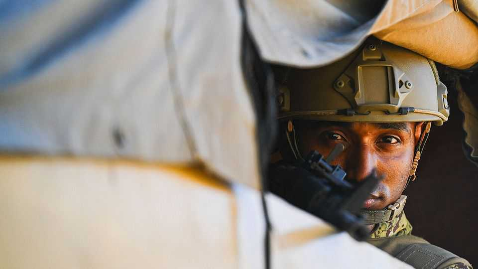

El Salvador’s gangbuster tries his luck in Haiti
The status quo is so dire Nayib Bukele might improve it. But the risks are huge

Nov 5th 2026
Few places on Earth are as miserable as Haiti. The last elected president was tortured and shot dead in his home in 2021. Since then, gangs brandishing military-grade weapons have wrought havoc.
They have taken over large swathes of territory in and around the capital, setting up roadblocks, terrorising residents and extorting “taxes” from them. At least 16,000 people, mostly civilians, have been killed, and over 1.5m displaced. Life expectancy is the shortest in the Americas. Ill-funded UN-backed forces sent to quell the violence have struggled. A UN “Gang Suppression Force” was approved in September last year, but only about 2,000 of the 5,500 soldiers it was promised have arrived, and they rarely venture out from their base.
Things are so bad that it is tempting to welcome almost any determined outsider who wants to impose order. Nayib Bukele, El Salvador’s president, has just sent over 2,000 Salvadoran soldiers to Haiti. His contingent outnumbers the UN’s forces. Mr Bukele is a brutal strongman but widely admired in the Americas for his crime-busting. Other countries have pledged logistical support for his intervention, including Colombia and the Dominican Republic, which shares an island with Haiti. President Donald Trump, who wants to see the region’s gangs smashed, appears to have given Mr Bukele the nod.
Mr Bukele says his aim is to recover four Salvadoran air-force technicians who were working in the UN’s Gang Suppression Force when they vanished (and were perhaps killed) in an ambush last month. But 2,000 troops does not sound like a mere rescue mission. More probably, he wants to burnish his reputation, by showing that his record of suppressing gangs at home in El Salvador can be extended abroad. Mr Bukele once bragged that he was strong enough to fix Haiti. In social-media posts he boasts he can “finish off” its gangs.
Foreign military interventions have a mixed record in Haiti. Previous UN efforts failed to calm the mayhem and sometimes added to it. A big worry about Mr Bukele’s mission is that its aims are unclear. Will the Salvadorans kill some gangsters and leave quickly, or occupy parts of the country? Will they work with other foreign forces and the local army and police? Today’s picture is confused, including not only the UN and the Haitian security services but also Vectus Global, a private military firm run by Erik Prince, an American with links to Trumpworld, who was hired by Haiti’s government to fight the gangs with drones. The UN frets that its role is being usurped.
Mr Bukele is wrong if he imagines Haitian gangs are like their less scary counterparts in El Salvador. Back home Mr Bukele brought down the murder rate by locking up hordes of young men, almost 2% of the total population, without due process. (Trials, if they happen, are of hundreds of suspects at once.) By tossing aside the rulebook while also quietly negotiating with gang bosses, he made his country safer with remarkably little bloodshed: only four police officers died in the first 14 months of his crackdown. Haiti, by contrast, is more like a warzone. Gangs are stronger, the state is weaker and prisons are notorious for escapes. Victory here would be more akin to winning a civil war.
Mr Bukele may end up doing some good in Haiti, especially if he persuades others to send more peacekeepers. But he needs to make clear whether his soldiers will work with the UN or do their own thing. The UN could help with vetting and training, and discourage abuses against civilians. Yet Mr Bukele may prefer his own gloves-off approach. His opacity is troubling. He should spell out his intentions—and remember that it is easier to start a fight than to end one. ■